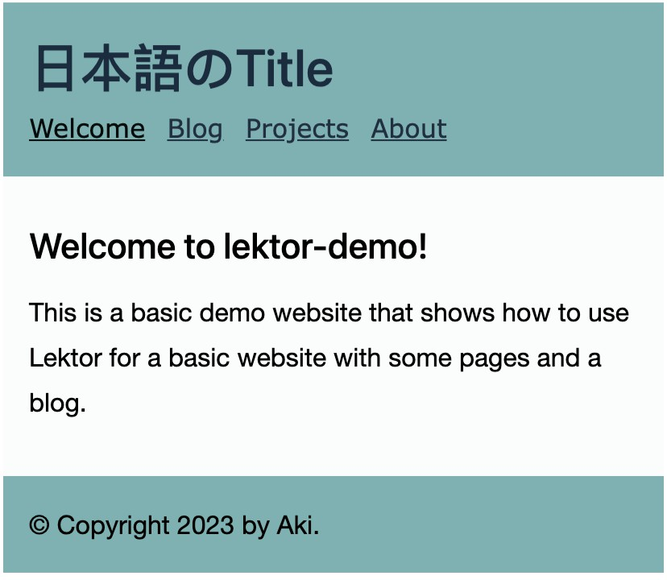
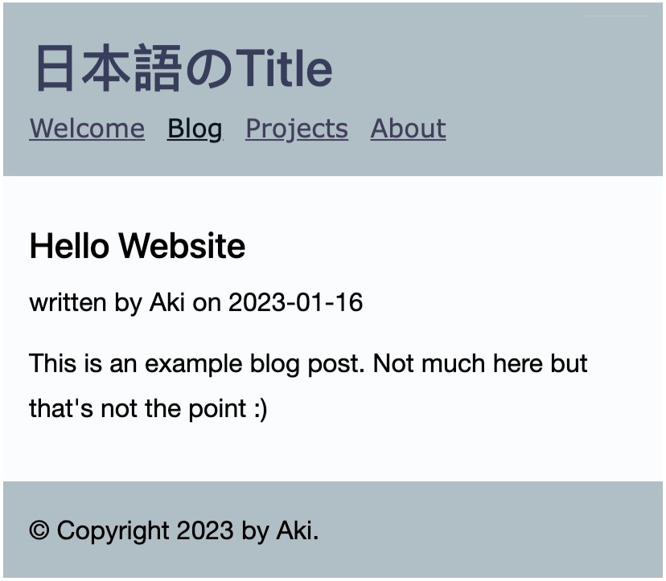

基本的なスタイルやレイアウトを決定したので、カラーの配色を決めて、いくつかテーマを作ることにします。
templatesのソースの中に、style.cssで色の指定がないクラス.activeと.disabledがあるので、その指定箇所を確認します。
<nav>
<ul class="nav navbar-nav">
<li{% if this._path == '/' %} class="active"{% endif
%}><a href="{{ '/'|url }}">Welcome</a></li>
{% macro render_pagination(pagination) %}
<div class="pagination">
{% if pagination.has_prev %}
<a href="{{ pagination.prev|url }}">« Previous</a>
{% else %}
<span class="disabled">« Previous</span>
{% endif %}
.activeはヘッダーで選択したメニューを強調するものです。.activeのカラーは--nenu-active-colorという変数に割り当てることにします。
.disabledは記事一覧のページネーションで記事が無い場合にグレーアウトするものです。これに、--gray-3の色を割りあてます。
ここでは、CadetblueとBluegrayという２つのカラーテーマを作りました。
:root {
/* 省略 */
/* Cadetblue */
--primarycolor: #7fb1b2;
--secondarycolor: #1b2c3f;
--linkcolor: #213040;
--hovercolor: #283d55;
--nenu-active-color: #030b0b;
--page-backgroundcolor: #fbfdfd;
/* Bluegray*/
--primarycolor: #B0BEC5;
--secondarycolor: #373d59;
--linkcolor: #413f5c;
--hovercolor: #504c77;
--nenu-active-color: #071116;
--page-backgroundcolor: #fbfcfd;
}
header .active a {
color: var(--nenu-active-color);
}
.disabled {
color: var(--gray-3);
}
カラーテーマの選択は、使う方のカラー変数を変数宣言の一番下に置くか、あるいは使わない方のカラー変数をコメントアウトして行います。

